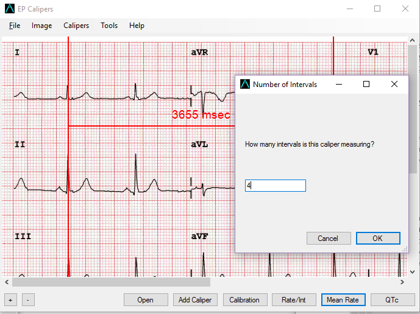
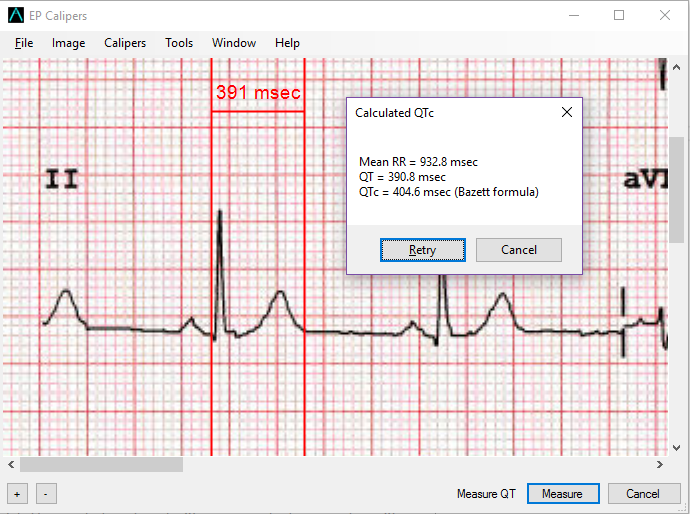

Making measurements
Making measurements
Caliper interval
The interval measured by each caliper is displayed on top of or next to the crossbar of the caliper. Until the calipers are calibrated, measurements are displayed in arbitrary units (points, roughly equivalent to screen pixels). Angle calipers show a measurement of the current angle in degrees and do not need to be calibrated to display angles.
Calibration
Calibration is necessary before any measurements can be made! Select the Calibrate button or the Caliper | Calibrate menu item. Select a caliper and stretch it over a known interval (such as 1000 msec for time, or 10 mm for amplitude calipers). Select the Set button. In the dialog box that appears, make sure the interval matches what you are measuring. Enter both the calibration interval and units (e.g. 1000 msec, or 1 mV). Select the OK button in the dialog box to set the calibration. Note that time and amplitude calipers need to be calibrated separately. Once calibrated, calipers will show intervals in the units used to calibrate. Newly created calipers will use the same calibration.
Figure 1: Calibration dialog
It is important to use time units such as msec or sec when providing a time calibration if you want to do calculated measurements such as the corrected QT interval. In other words, type in your calibration measurement as 1000 msec and not just 1000. Negative calibration intervals are treated as positive numbers (i.e. the negative sign is ignored).
Changing calibration
You can recalibrate at any time just by repeating the calibration process. You can clear all calibration by selecting Clear in the calibration toolbar. Note that calibration is maintained if the image is zoomed. Selecting a new image will reset calibration. Rotating the image will reset calibration. Changing PDF pages will reset calibration. Switching to transparent mode or back will also reset calibration.
Interval/Rate
Once a time caliper is calibrated, provided you use time units (such as msec or sec) for the calibration, it is possible to toggle between interval measurements (e.g. 600 msec) and heart rate measurements (e.g. 100 bpm) by selecting the Rate/Int button or Caliper | Toggle rate/interval menu command.
Mean rate and interval calculation
Select a calibrated time caliper and stretch it over a number of intervals. Select the Mean Rate button or Caliper | Mean rate interval menu command and enter the number of intervals measured in the dialog box that appears. Select the Calculate button to see the result. Using EP Calipers to calculate mean rates and intervals is very useful in irregular rhythms, such as atrial fibrillation.

Figure 2: Mean RR measurement
QTc calculation
QTc measurement is a multiple step process. Select the QTc button on the toolbar or the Caliper | QTc measurement menu command. Follow the prompt to stretch the selected caliper over one or more RR intervals and select the Measure button. Enter the number of intervals the caliper is stretched over and select OK. Then use the same caliper to measure the QT interval. Select Measure. A dialog box will give the calculated QTc using Bazett's formula by default. Click Retry to measure another QT interval and calculate the QTc while keeping the same RR interval. Click Cancel to end the QTc calculation. You can change the QTc formula using Options.

Figure 3: QTc measurement
Brugadometer
The Brugadometer is a diagnostic tool for Brugada syndrome developed in collaboration with Dr. Adrian Baranchuk and his colleagues at Queen's University Kingston, Ontario, Canada. It is a tool intended to distinguish between ECGs with a Brugada syndrome pattern in leads V1 or V2 and ECGs with incomplete right bundle branch block. This tool is under development in EP Calipers and will likely evolve in future updates. In order to use the Brugadometer, it is necessary to calibrate an amplitude caliper in millimeters (mm) and to calibrate a time caliper preferably in msec or mm. After doing so, an angle caliper will appear to have a triangle at its apex as shown below.
Figure 4: Brugadometer showing triangle base 5 mm below apex of caliper
The triangle base will be located 5 mm below the apex of the triangle. Proper alignment of this triangle with an r' wave in a person with a suspected Brugada ECG will provide measurement of the so-called beta angle and the triangle base. A triangle base > 160 msec (4 mm at standard ECG recording speed of 25 mm/sec) has an increased probability of being a Brugada ECG. Please see de Luna AB, Garcia-Niebla J, Baranchuk A. New electrocardiographic features in Brugada syndrome. Curr Cardiol Rev. 2014 Aug; 10(3): 175-180 for further information.